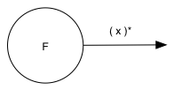
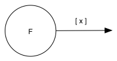
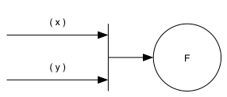
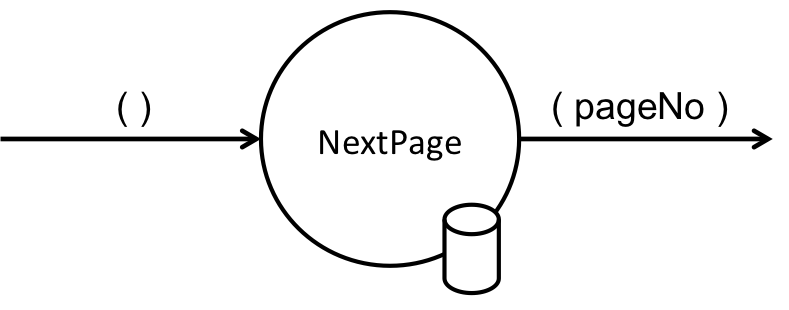
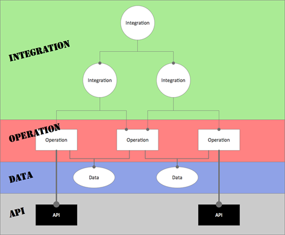
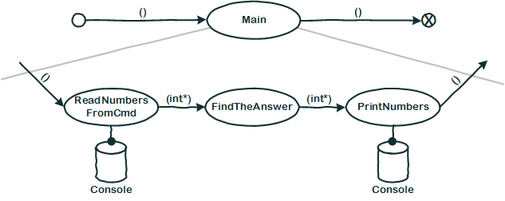
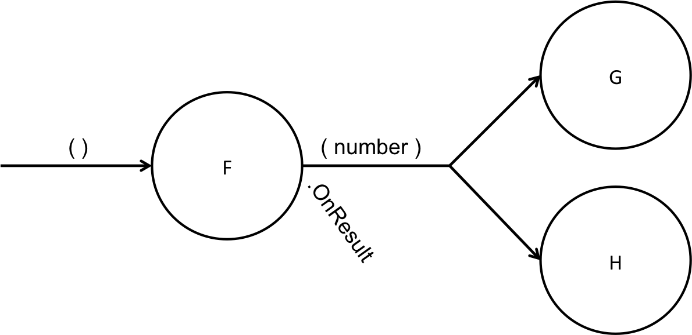
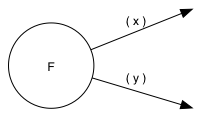

Flow Design Theorieteil
1 Entstehung und Grundgedanken
Flow Design ist aus der Clean Code Development Bewegung heraus entstanden. Hauptinitiatior und Erfinder ist Ralf Westphal. Ralf Westphal war auch Mitbegründer und Miterfinder der Clean Code Developement Bewegung.
Clean Code Development ist eine Ansammlung aus Prinzipen, die einem helfen sollen wartbare Software zu schreiben. Wartbare bedeutet Änderungen an der Software sollen leicht zu realisier sein und der Programmcode soll am besten auch leicht zu lesen bleiben. Prinzipien sind jedoch nicht so leicht einzuhalten, wie konkrete Regeln, welche man einfach einhalten kann. Somit ist es in der Praxis schwer die Prinzipen auf den eigenen Code anzuwenden. Flow Design soll in Ergänzung eine Methodik und Programmierregeln bieten, die man einfach befolgen kann und man erhält automatisch ein Code, der die CCD Prinzipen erfüllt.
Im Hauptfokus liegen vorallem folgende Prinzipien von CCD:
- KISS
- YAGNI
- Lose Koppelung
- Orthogonalität
Weitere Prinzipien die Beachtung find sollen:
- Separation of Concerns
- Single Responsibility Principle
- Information Hiding Principle
- Dependecy Injection
Unter Flow Design versteht man zwei Dinge: Einmal das Diagramm und einmal die Komplette Entwurfsmethode, indem das Diagramm nur ein Teil davon ist.
Flow Design soll im Gegensatz zu UML besser geeignet sein , bereits in der Entwurfsphase Anwendung zu finden. Ziel ist es sich auf dem Papier bereits ein Entwurf der Programmstruktur überlegen zu können. Aktuell sei es aus der Mode gekommen, vor dem Programmieren einen Entwurf zu erzeugen, was vorallem daran läge, dass die vorhandenen Entwurfsmethodiken eher hinderlich seien und einen unnötigen Overhead erzeugen ( laut Ralf Westphal) Es sei somit üblich geworden die Denkearbeit, wie man seinen Code möglichst sauber strukturien kann, während dem Programmieren direkt im/vor dem Sourcecode zu verrichten. Dies sei jedoch laut Ralf Westphal eine eher ungünstige Lösung und behindere eher den kreativen Denkprozess mit unnötiger Schreibarbeit. Auf dem Papier sei man mit einer passenden Entwurfsmethodik schneller und man könne auch verschiedene Ideen schneller ausprobieren, Änderungen machen, oder auch wieder verwerfen, als direkt im Sourcecode.
Es geht jedoch nicht darum den Sourcecode bis ins kleinste Detail in eine Art visuelle Programmiesprache zu pressen, sondern darum, wie man den Code am sinnvollsten in Funktionseinheiten zerlegt (die einen möglichst aussagekräftigen Namen haben sollten). Wie die Funktionalität auf unterster Ebene implementiert wird, wird auf dem Diagramm nicht berücksichtigt. Das ist jedoch keine negative Einschränkung, vielmehr ermöglicht dies, sich auf beim Entwurf nicht mit unnötigen Implementierungsdetails bechäftigen zu müssen, sonder sich auf das Große ganze - das Zusammenspiel/ Komposition der Funktionseinheiten und den Datenfluss zu konzentrieren.
Anzumerken wäre noch, dass nicht der Kontrollfluss abgebildet wird, sondern, wie erwähnt, der Datenfluss.
2 Pfeile und Kreise
2.1 DRAFT RomanNumbers Beispiel

Das nachfolgende Beispiel soll an einem einfach Beispiel zeigen, was ein Flow Design Diagramm ist. Das Programm/Unterprogramm soll eine römische Zahl in eine Dezimalzahl konvertieren.
Alle eingekreisten Namen sind Funktionseinheiten, oder auch Softwarezelle genannt. Diese werden in den meisten Fällen im Code als Methoden implementiert. Die Pfeile zeigen den Datenstrom. Links die Inputs und rechts die Outputs.
Der Input-Datenstrom besteht aus einem String. Dieser String wird zerlegt in einzelne Buchstaben. Der Buchstabenstrom wird anschließend einer Funktionseinheit gegeben, die jeden Buchstaben zu der entsprächenden Dezimalzahl konvertiert. Anschließend muss auf den Strom noch nach eine Negationsregel angewandt werden. Diese untersucht den Strom aus Ganzzahlen auf Stellen, wo eine kleinere Zahl vor einer größeren Zahl steht und sie in dem Fall dann negativ macht. Am Ende wird der Datenstrom einer Funktionseinheit übergeben, die alle Zahlen aufaddiert. Das Ergebnis ist die Summe aller Zahlen.
Die Funktionseinheiten sind im Diagramm als Kreise dargestellt, in welchen der möglichst aussagekräftige Name steht. Pfeile zeigen den Datenstrom, auf dem der Datentyp vermerkt ist. Links gehen Pfeile in die Funktionseinheit hinein, das ist der eingehende Datenstrom und rechts ist der ausgehende Datenstrom. Die Funktionseinheit wird auch als Domäne bezeichnet. Die Domäne interessiert sich nur für ihre Aufgabe und soll möglichst isoliert betrachtet ihre Aufgabe erledigen können.
2.2 MISSING IMAGES Hirarchische Datenflüsse
Das Flow Design unterstützt die Funktion in eine Softwarezelle sozusagen hineinzuzoomen. Hier erkennt man die rekusive Eigenschaft der Softwarezellen. Eine Softwarezelle kann wiederum aus mehreren Softwarezellen bestehen, die zusammen die Aufgabe erledigen, die die übergeordnete Softwarezelle beschreibt.
3 Grundlegende Notationen
Bilder sind von:
http://flow-design.org/overview/implementation/#How_to_implement_inputs_to_a_functional_unit
Weitere Notationen kurz erklärt. Auch mit "Integrationen" aber noch nicht erklären, dass es ein Unterschied gibt. Provider Dreieck.
3.1 MISSING IMAGES Datentypen
Eine leere Klammer bedeutet, dass keine Daten fließen. Falls man sowohl dem Datenstrom einen Namengeben möchte, als auch den Datentyp definieren möchte, schreibt man beides mit einem Doppelpunkt getrennt hintereinander.
3.2 MISSING IMAGES Definition eigener Datentypen
Benutzt man einen Datenstrom bestehend aus einem eigenen Datentypen, so zeichnet man irgendwo auf dem Papier eine Box, indem man den Datentyp mit seinen Membervariablen auflistet.
3.3 MISSING IMAGES Arrays (auch mit fester Größe)
Werden Daten als Arrays mit fester größe übergeben, so wird hinter dem Datentyp eine leere Eckigeklammer angehängt. Ist die Arraygröße bekannt, so kann man diese in die Klammer noch zustätzlich eintragen.
3.4 FRAGEN 0 bis n (Datenstrom)

Wird als * außerhalb der Klammer dargestellt. (int)* Selten wird ein Datenstrom auch mit geschweiften Klammern dargestellt, um ihn von dem optionalen Output zu unterscheiden. {int}
FRAGE: Wenn auf Container mit yield gearbeitet wird, so sind die Grenzen zum Datenstrom verschwommen.
3.5 FRAGEN Container / Listen
Stern innerhalb der Klammer. Der Datentyp liegt in einem Container vor. Die zu bearbeitende Daten können entweder komplett auf einmal an die Funktionseinheit gegeben werden ( als Liste, Dictionary, etc. ) oder aber - falls die Programmiersprache dies unterstützt - als yield ähnlich wie ein Stream realisert werden, wo einzelne Elemente bereits abgearbeitet werden können, bevor alle anderen Daten erzeugt wurden.
3.6 FRAGEN 0 bis 1 (optionaler Output)

Eckige Klammer [int]
Optinale Outputs können nicht über ein Rückgabewert realisiert werden.
FRAGE: Stimmt das? Kann man nicht auch ein Datentyp verwenden, der null Werte zulässt?
Dann müsste jedoch wahrscheinlich die folgende Operation den Input auf null überprüfen.
3.7 MISSING IMAGES Mehrere Inputs / Outputs auf einem Weg
Mehrere Inputs werden in die Klammer geschrieben und mit einem Komma getrennt.
Mehrere Outputs lassen sich nicht in allen Sprachen einfach realiseren. Wahlweise kann man es mit Tupel realisieren, oder man verwendet stattdessen einen eigenen Datentyp, der alle Output-Daten beinhaltet.
3.8 DONE Joined Inputs

Wenn die Softwarezelle nur dann ihre Aufgabe erledigen kann, wenn mehrere ihre Inputs vorhanden sind und diese aus unterschiedliche Quellen stammen, dann braucht man ein so genannten Join. Dieser wird als Linie dargestellt an die mehrere Inputs zusammenlaufen.
Im Code kann dies einfach realisiert werden als eine Funktion, die mehrer Inputsparameter entgegennimmt.
Das Bündeln der Datenströme soll nicht die Funktion F erledigen, sondern ist Aufgabe einer übergeordneten Funktionseinheit. Die Funktionseinheit F erwartet einfach 2 Parameter auf einmal und kennt deren Herkunft nicht.
3.9 FRAGEN Tonnen
 Hat die Funkton keine Eingangsparameter, so hat sie oft stattdessen eine Tonne, die anzeigt, dass die Funktionseinheit state-behaftet ist.
Tonnen bedeuten, dass die Funktionseinheit state-behaftet ist. In den meisten Fällen ist das eine Membervariable einer Klasse?
FRAGE: Kann State auch anders umgesetzt sein?
3.10 TODO Anhängigkeiten / Provider
Tonnen oder Dreicke können zusätzlich noch mit einer Linie verbunden sein, an dessen Ende ein Kreis gezeichnet ist, dann bedeutet das, dass die Funktion auf externe Resourcen zugreift / von ihr Abhängig ist. Den Kreis kann man sich bildlich wie eine Hand vorstellen, an die sich die Funktion festhält, also eine Koppelung entsteht.
3.11 TODO GUIS / Programmstart/ Ende
3.12 TODO Klassen / Container definieren
4 Implementationsregeln / C# Exkurse
Regeln:
- Trennen von Integrationen und Operationen
- keine funktionale Abhängigkeiten in Operationen zu anderen Funktionseinheiten aus dem selben Programm fs
4.1 IODA Architekur
IODA steht für: Integration Operation Data API

4.1.1 DRAFT Erläuterung des Schaubildes
Das Flow Design unterscheidet zwei Arten von Funktionseinheiten: Integrationen und Operationen. Die Aufgabe einer Integration ist, die unabhängigen Operationen in das große Ganze zu Integrieren. (Fußnote) Ralf Westphal spielte auch mit den Gedanken diese als Funktionseinheiten als Koordinatoren oder Kompositionen zu bezeichnen.
Integrationen "integrieren" andere Integrationen und/oder Operationen in das Programm. Sie dürfen also funktional abhängig sein von beiden Arten von Funktionseinheiten.
Im Gegensatz dazu dürfen Operationen keine Integrationen oder andere Operationen kennen. Sie dürfen aber auf Daten Zugreifen über diese entsteht auch die einzige Möglichkeit der Kommunikation zwischen Operationen. Mit Daten sind meint man sowohl inpersitent Daten (Daten im Arbeitsspeicher), als auch persitente Daten auf der Festplatte. Wie zum Beispiel Dateien, oder Datenbanken, wobei man beides auch zu der Gruppe API zählen könnte. Außerdem werden API-Aufrufe in Operationen isoliert und eine Integration darf kein Wissen über die API haben.
Sowohl Operationen als auch Integratinen dürfen Daten Erzeugen. Beispielsweise das Aufrufen eines Konstruktors oder Deklarieren einer lokalen Variablen. Das Koordinieren und Weiterreichen und von Daten übernimmt jedoch die Integrationen ( was auf dem Schaubild nicht so gut herauskommt).
Anhand einer Flow Design Skizze, kann man leicht herausfinden, welche Methoden Operationen sind und welche Integrationen. Alle Leaf-Knoten sind Operationen, der Rest sind Integrationen.
4.1.2 DRAFT PoMO ( Principle of Mutual Oblivion)
Ein Producer kennt seinen Consumer nicht. Ein Consumer kennt seinen Producer nicht. Das nenne ich das Principle of Mutual Oblivion (PoMO, Prinzip der gegenseitigen Nichtbeachtung) – architect napkin, Seite 80
Dieses Prinzip besagt, dass Funktionseinheiten sich nicht gegenseitig kennen sollen. Es soll auch verhindert werden, dass eine Einheit eine andere aufruft und von deren Ergebnis abhängig ist, bzw. auf das Ergebnis wartet. Eine Funktionseinheit soll, nachdem sie die Daten bearbeitet hat, sie einfach nach außen weiter reichen und nicht wissen, wer die Daten entgegennimmt. Dieses Prinzip verhindert eine Koppelung zwischen den einzelnen Funktionseinheiten.
Um jedoch ein "Zusammenspiel" zwischen den einzelnen entkoppelten Einheiten zu ermöglichen, bedarf es einen oder mehrere "Koordinatoren" welche diesem Prinzip nicht entsprechen müssen. Nur so kann aus vielen kleinen Funktionseinheiten ein großes Ganzes werden, dass eine komplexe Aufgabe lösen kann.
Die Funktionseinheiten, die das PoMO erfüllen müssen nennt Ralf Westphal Operationen und die Koordinatoren nennt er Integrationen. Als Regel zusammengefasst nennt er dies "Integration Operation Segregation Principle" kurz IOSP.
4.1.3 DRAFT IOSP ( Integration Operation Segregation Principle)
Dieses Prinzip besagt, dass eine Funktioneseinheit entweder eine Operation oder eine Integration ist und beide Verantwortungsberreiche nicht vermischt werden dürfen.
- Operationen
Operationen sind Methoden, die Logik/ Kontrollstrukturen enthalten dürfen. In C# wären das:
- if, else
- switch, case
- for, foreach,
- while, do
- try, catch, finally
- goto
Gleichzeitig müssen die Operationen das PoMO prinzip erfüllen, sie dürfen keine andere Funktionseinheiten kennen ( gemeint ist, sie über ihrer eigentlichen Namen aufzurufen) oder auf das Ergebnis einer zu warten. Ein Funktionsaufruf ist nur über Actions ( Funktionspointer ), die man als Funktionsparameter mit übergibt, oder Events möglich. Beide dürfen keine Rückgabewerte haben, was bei Actions implizit der Fall ist. Damit erfüllt die Operation weiter das PoMO, da sie nicht selbst bestimmt, welche Funktion sie aufruft, sondern die Funktion, welche die Operation aufgrufen hat ( und somit automatisch eine Integration sein muss, welche die PoMO Bedingung nicht erfüllen muss).
Operationen sind also imperative programmiert. Imperative Programmierung ist ein Programmierstill, mit dem Fokus auf das wie ein Problem gelöst werden soll. Im Gegensatz dazu steht der Deklarative Ansatz. Beim deklarativen Programmieren steht der Fokus auf das was getan werden soll und nicht so sehr, wie es im Detail genau angestellt wird. Ein Beispiel hierfür wären zum Beispiel SQL Befehle. Hier wird nur gesagt, was man haben möchte und das Programm kann dann die Anfrage nochmal untersuchen und selbst bestimmen, wie es die Anfrage am besten ausführt.
- FRAGEN Integrationen
Die Integrationen werden nach Flow Design Richtlinien deklarative programmiert. Diese Funktioneneinheiten dürfen anders als die Operationen, andere Funktionen aufrufen, sie also kennen. Die Integrationen erfüllen also nicht das Principle of Mutual Exclusion Der Unterschied beim Flow Design ist jedoch, dass eine bewusste Trennung eingehalten wird.
Integrationen dürfen auch auf die Terminierung einer Funktion warten und den Rückgabewert weiterreichen an andere Funktionen. Dafür dürfen sie keine Logik im Sinne von Kontrollstrukturen beinhalten. Auch dürfen sie keine API-spezifischen Befehle kennen, (kein Zugriff auf persitent Daten in Integrationen /Filehandles?).
Die Businesslogik, das was die Funktionalität erzeugt, diese befinden sich in Operationen und sind entkoppelt von ihrer Umgebung. Sie bekommen einfach nur von irgendwo her einen Input (bzw bei keinen Inputparametern einfach ausgeführt werden) und führen damit die von ihnen implementierte Logik aus und geben das Ergebnis nach außen. Beim nach außen Reichen kennt die Funktionseinheit jedoch nicht den Empfänger.
4.1.4 DONE Tabelle - IOSP auf einen Blick
| Operationen | Integrationen | |
|---|---|---|
| Rechenoperationen ( +, *, %, … ) | Ja | Nein |
| Kontrollstrukturen (if, else, while, for, foreach, …) | Ja | Nein |
| try, catch | Ja | Nein |
| API-Aufrufe (Methoden von Bibliotheken) | Ja | Nein |
| Ressourcen-Zugriffe (Dateien, Datenbanken etc.) | Ja | Nein |
| Standard Library, LINQ | Ja | Ja |
| Namen andere Funktion kennen | Nein | Ja |
| Auf Rückgabewert warten | Nein | Ja |
4.2 DONE Beispiel foreach und Funktionsaufruf als negativ Beispiel.
static void FormatAndPrintStrings(List<string> lines) { foreach(line in lines) { string s = MyComplexFormattingFunction(line); Console.WriteLine(s); } }
Derartiger Code wird wohl in den meisten C#-Codebase zufinden sein und doch ist er nach Flow Design Richtlinien falsch.
In diesem Beispiel wurde Logik (foreach) gemischt mit einem expliziten Funktionsaufruf einer Funktion. Diese Funktion ist somit nicht IOSP konform.
Es ist etwas ungewohnt, das Trennen von Integrationen und Operationen im Code auch zu berücksichtigen. Eine For-Schleife über eine Collection laufen zu lassen und jedes Element an eine Unterfunktion weiterzureichen ist etwas, was wohl viele Programmierer regelmässig so schreiben. Das soetwas nun nicht mehr erlaubt ist, braucht eine gewissen Umgewöhnungszeit.
Hier nun die Umsetzung in Flow Design mit einfachsten Mitteln.
static void FormatAndPrintStrings(List<string> lines) { List<string> formattedStrings = MyComplexFormattingFunction(lines); PrintLines(formattedStrings); } static List<string> FormatLines(List<string> lines) { List<string> result = new List<string>(); foreach(line in lines) { string formattedstring; // do complex formatting here result.Add(formattedstring) } return result; } static void PrintLines(List<string> lines) { foreach(line in lines) { Console.WriteLine(s); } }
Die Funktion wurde aufgeteilt in eine Integration (FormatAndPrintStrings) und zwei Operationen.
Im ersten Beispiel hat die Funktion zwei Aufgaben erfüllt, sie hat die Formatierung-Funktion integriert und
das Ergebnis ausgegeben.
Nun sind Integration, Ausgabe und Formattierung sauber getrennt.
Jedoch wurde der Code nun deutlich länger. Die Foreach-Schleife ist in beide Operationen gelandet und das Initialisieren und
Befüllen der temporären Liste in FormatLines nimmt auch etwas Platz ein.
Dazu kommt noch, das die String-Formattierungslogik nun eingebettet in dieser Foreach-Schleife liegt, welche vorher getrennt in
einer extra Funktion sich befand.
Elegantere Lösungen mit Actions
static void FormatAndPrintStrings(List<string> lines) { IterateOverEnumeration(lines, onLine=PrintFormat ); } static void PrintFormat(string line) { var fl = MyComplexFormattingFunction(line); Console.WriteLine(fl); } static void IterateOverEnumeration(IEnumerable<string> lines, Action<string> onLine) { foreach(line in lines) { onLine(line); } }
Noch eleganter mit Actions und Lambdas
static void FormatAndPrintStrings(List<string> lines) { IterateOverEnumeration(lines, line => { var fl = MyComplexFormattingFunction(line); Console.WriteLine(fl); }); } static void IterateOverEnumeration(IEnumerable<string> lines, Action<string> onLine) { foreach(line in lines) { onLine(line); } }
Elegantere Lösungen?
Es gibt zwei Möglichkeiten: Die erste Möglichkeit besteht darin, die Richtlinien etwas aufzulockern und eineKategorie "Helfer-Funktionen" einzuführen.
Diese Funktionen haben den Status von API-Funktion. Somit wäre das erste Beispiel IOSP konfrom und die Funktione FormatAndPrintStrings
würde als Operation gelten.
Dabei stellt sich jedoch die Frage, welche Kriterien eine Funktion erfüllen muss, damit sie unter diese Kategorie
fällt, was sich als eine nicht ganz triviale Frage herausstellt.
Die zweite Möglichkeit besteht darin auf Datenfluss orientierte Sprachfeatures zu verwenden. Somit hängt diese Möglichkeit stark von der verwendetet Programmiersprache ab.
In C# exisitiert eine Kategorie an Methoden, die speziell auf das arbeiten mit Datenflüssen ausgerichtet ist, diese werden zusammengefasst unter dem Namen LINQ (Language-Integrated Query).
Mit Hilfe von LINQ lässt sich obiges Beispiel zu einem IOSP konformen Einzeiler reduzieren.
static void FormatAndPrintStrings(List<string> lines) { lines.Select( x => MyComplexFormattingFunction(x)).ForEach( x => Console.Writeline(x)); }
Man könnte sich nun darüber streiten, was man nun damit gewonnen hat. Schließlich enthält die Funktion mit LINQ im Grunde genommen fast nun genau die selbe Logik, wie das erste Beispiel, nur mit einer anderen Schreibweise. Den Nutzen dieser Regel erschließt sich erst, bei größeren Codebasen und kommt bei kleinen Beispielen oft nicht zum Vorschein. Erst wenn die Integrationen mehr mache, als nur eine Funktion aufrufen, wird das Entkopplen nützlich. Außerdem ist der Fall einer Foreach-Schleife und ein Funktionsaufruf eine Koppelung, die nicht so dramatisch ist. Man könnte für diesen Fall sogar eine Ausnahme machen und sie erlauben.
Zusammenfassend könnte man noch sagen, dass eine größere Lesebarkeit von IOSP komformen Programmcode entsteht, umso mehr moderne Features eine Sprache hat (??? )
4.3 C# Features um Datenflüsse zu implementieren
Um nach Flow Design Regeln zu programmieren, helfen einem in C# einige Features die in diesem Kapitel vorgestellt werden.
4.3.1 TODO LINQ und Lambdas
4.3.2 DRAFT yield return
Hiermit kann man ein Producer-Consumer Pattern implementieren.
Vorraussetzung ist jedoch, dass man mit Daten arbeitet, die das IEnumerable Interface implementieren, wie zum Beispiel die
List Klasse.
Das folgende Flow Design soll mit yield return realisiert werden.

Das Programm ist eine Konsolenanwedung, die den Benutzer eine Eingabe erlaubt. Wenn die Eingabe die Zahl 42 entspricht, wird das Programm beendet, wenn nicht, dann wird die Zahl ausgegeben und der Benutzer kann wieder eine Zahl eingeben. Das wiederholt sich, solange bis der Benuter die Zahl 42 eingetippt hat.
- FRAGEN Erläuterung des Schaubildes
Die Main Funktion wird nach dem Programmstart ( leerer Kreis ) ohne Parameter aufgerufen. Danach ruft diese die Funktion
ReadNumbersFromCmdauf, welche aus der Konsole eine Eingabe ließt und sie zu einem int parset. Der int nimmt die Main Funktion entgegen und gibt diesen an FindtheAnswer weiter. Diese Funktion hat die Aufgabe den entgegengenommenen int mit der Zahl 42 zu vergleichen. Wenn die Zahl 42 ist, wird der Datenstrom abgebrochen. Wenn es nicht die 42 war, dann wird der int nach außen gereicht und die Main Funktion reicht die Zahl an die PrintNumber Funktion weiter. PrintNumber gibt die Zahl in die Konsole aus. Wenn der Datenstrom abbricht, returned die Mainfunktion und das Programm wird beendet. FRAGE: Was bedeutet nochmal die Tonne, mit Hand? - DONE Implementation
class Program { static void Main() { IEnumerable<int> numbers = ReadNumbersFromCmd(); IEnumerable<int> answer = FindTheAnswer(numbers); PrintNumbers(answer); } public static IEnumerable<int> ReadNumbersFromCmd() { while (true) { var line = Console.ReadLine(); yield return int.Parse(line); } } private static IEnumerable<int> FindTheAnswer(IEnumerable<int> numbers) { return numbers.TakeWhile(x => x != 42); } private static void PrintNumbers(IEnumerable<int> numbers) { foreach (var number in numbers) { Console.WriteLine(number); } } }
Der Producer ist in dem Fall der
ReadNumbersFromCmd. Dieser produziert ein endloser Stream anint-Daten. Es wird jedoch immer nur ein Element erzeugt und erst nachdem der Consumer das Element abgefragt hat, wird ein neues Element erzeugt. Wenn nichts mehr konsumiert wird, wird auch nichts mehr produziert. Den Abbruch der Endlossschleife ( also das Stoppen des Datenflusses) kann somit auch eine andere Funktion außerhalb der Schleife übernehmen.
4.4 FRAGEN Datenströme mit mehreren Wegen
4.4.1 Ein Output-Weg mehrer Empfänger

Falls ein Output an mehrere Empfänger weitergereicht werden soll, so lässt sich das am besten mit Events realisieren. Leider bedarf es dann bei der Benutzung der API mehr Vorsicht, da man sich vorher auf ein Events registrieren muss, bevor man die gewünschte Funktion aufrufen kann. Alternativ kann auch die übergeordnete Integration den Rückgabewert an die anderen Beiden weiterreichen, oder über Actions (FRAGE: Liste aus Actions übergeben?).
4.4.2 DRAFT Mehrere Output-Wege

Wenn eine Funktion mehrer Output-Wege hat, so kann man das im Code nicht mehr mit einem einfachen Rückgabewert implementieren. Wäre es für eine Operation erlaubt eine andere Funktionseinheit zu kennen, dann könnten wir natürlich einfach in der Operation selbst die nachfolgenden Methoden per Namen aufrufen. Da aber Operationen entkoppelt von ihrer Umwelt sein sollen, müssen die möglichen Outputwege über die Argumente der Methode mitgegeben werden. Somit werden die Verantwortlichkeiten bewahrt und die übergeordnete Integration koordiniert weiter den Datenfluss und die Operation kennt keine anderen Funktionseinheiten.
Alternativ könnte man auch hier Events nutzen, was aber durch das zusätzliche Registerien auf das Event eher nicht zu empfehlen ist, wenn absehbar ist, dass nicht mehrere Funktonseinheiten gleichzeitig das Ergebnis empfangen sollen.
4.4.3 FRAGEN mit und/oder den Kontrollfluss notieren.
Wenn man möchte, so kann man den Kontrollfluss, auch in das Diagramm hier mit reinnehmen. Man kann in den Winkel der beiden Pfeile notierem, ob beide Datenflüsse fließen, oder immer nur einer
FRAGE;
- XOR , OR ,…
- Kann man eine implementationsregel davon ableiten? Wenn ich ein UND habe, dann kann der Strom als Tupel/Datentyp realisiert werden. Dann muss die Integration einfach nur den ersten Teil an die eine Methode weiterreichen und den zweiten Teil an die andere. Wenn es es ODER ist, dann sind gelten ähnliche Regeln, wie für Optionale Outpute. Ich muss eine Action mitgeben. (Oder Datentypen, die null sein dürfen?)
4.5 Weitere Beispiele was erlaubt ist und was nicht erlaubt ist.
4.5.1 DONE Rückgabewert erwarten von Funktion als Parameter übergeben.
In C# gibt es neben den Actions, die keine Rückgabewerte erlauben, auch Funktionspointer, die einen Rückgabewert erlauben.
Diese werden mit Func<Rückgabewert,Parameter,...> deklariert.
Die Func würde zwar das IOSP erfüllen, die Operation würde die andere Funktion nicht kennen,
jedoch würde trotzdem eine funktionale Abhängigkeiten entstehen und somit ist die untenstehende Funktion nicht Flow Design konform.
static List<string> FormatStrings(List<string> lines , Func<string,string> formatFunc ) { List<string> result = new List<string>(); foreach(line in lines) { string formattedstring = formatFunc(line); result.Add(formattedstring) } return result; }
4.5.2 TODO API-Aufruf, Filehandling?, Daten in Integrationen?
4.6 TODO Warum macht man das? Sinn der Aufteilung.
- Ketten Bild
- nochmal rückbesinnen auf CCD
- Größtes übel funktionale Abhängigkeiten. Wenn jemand seine Arbeit erst zuende machen kann, wenn ein anderer seine Arbeit getan hat.
4.7 DRAFT Ausnahmen
4.7.1 TODO Rekursion
Operationen dürfen sich selber aufrufen.
4.7.2 DONE Integrationen
- DONE LINQ / Standard-Library Funktionen
Manche Funktionalitäten, die die Sprache selbst bereitstellt, können streng genommen als API-Aufrufe bezeichnet werden . Jedoch gilt hier eine Ausnahme. Man darf auch in Integrationen diese Funktionalität verwenden. Beispiele aus C#:
int.TryParse,List<>.Sort,Dictionary<>.Insert, … - DONE Try / Catch
Oft braucht man auf oberster Ebene, einen Try/Catch, der alle Exceptions abfangen soll, und eine generelle Fehlerbehandlungsroutine startet. Hier bleibt einem nichts anderes übrig, als die Regel keine Logik in den Integrationen zu haben, etwas aufzuweichen.
4.8 FRAGEN KNOWNCAUSE Zusammenfassung - IODA Architekur - Tabelle
Tabelle: Daten - Methoden in Daten-Objekte aufrufen? Darf Operation die Methode kennen? Daten - was bedeutet die eigentlich? Methoden die zum Datentyp gehören/gekaspelt sind, sind die in Operationen erlaubt? file open handlers? Daten - Darf Integration wirklich Kontruktor aufrufen, das sind doch daten, oder gelten nur persistente daten?
5 Ablauf der kompletten Flow Design - Entwurfsmethode
5.1 TODO Definieren der Portale und Provider
Man zeichnet ein Kreis auf ein Papier, diese stellt die Domäne dar. Auf der linken Seite hängt man die Sachen dran, die auf die Domände zugreifen so gegannte Portale, zum Beispiel HTTP-Zugriff, Batch mode, oder GUIs. Auf der anderen Seite sind die Provider, diese Stellen externe Resourcen zur Verfügung, die die Domäne verwendet. Ziel ist es später in der Implementierung darauf zu achten, dass die "Schicht" oder "Membran", zwischen Domäne und Außenwelt möglichst dünn bleibt. Somit lässt sich die Domäne besser testen und es lassen sich leichter neue Portale und Provider anhängen.
5.2 TODO Interfaceskizze ( im Falle einer GUI Anwendung )
Man zeichnet eine einfache Skizze der GUI auf ein Papier und überlegt sich, welche Interaktionen kann der Nutzer machen. Diese Interaktionen werden dann gesammelt und für jedes wird dann ein eigenes Flow Design erstellt.
5.3 TODO Flow Design Entwurf
Herauskristallisieren der einzelnen Funktionseinheiten und welche Daten von wo nach wo fließen.
5.4 FRAGEN Einordnen der Funktionseinheiten in bestimmte Container
Mit Container meint man: Klassen, DLL, Anwendungen. Man fasst eine oder mehere Funktionseinheiten zusammen, indem mag zum Beispiel alle mit einer gestrichelten Linie einkreist oder alle die zur selben Klasse gehören farblich markiert. Der Name der Klasse notiert man dann im eingekreisten Feld oder unter jeden Funktionseinheit. endet mit Einteilen in Klassen, DLL, Anwendungen,…
Entwurf ist ein Interativer Prozess, somit wäre round trip super "Sinn des Systems SharpFlowDesign erläutern"
1)FRAGE: Manchmal wird eine Funktionseinheit selbst als Klasse implementiert? Dann kann ich sie ja nicht in eine andere Klasse schieben.
5.5 FRAGEN Optional - Bestimmen von Parallelitäten
Es können zusätzlich noch Pfeile eingefärbt werden, um zu verdeutlichen, dass manche Datenströme parallel laufen können. FRAGE: Wie genau geht das?
6 TODO Rekursive Eigenschaft der Softwarezellen/ Architekur
Das Schöne an Flow Design und dem Konzept der Softwarezelle ist, dass sie rekusive ist. Man kann das Problem/die Andwendugn ganz oben als eine Softwarezelle (oder hier der Kreis mit den Providern? ist das auch eine Softwarezelle?) verstehen, indem links Portale Zugriffe machen und rechts davon, die Softwarezelle wiederum auf ihre Provider Zugriffe macht. Die einzelnen Aktionen aus dem die Andwendung besteht können wiederrum als Softwarezellen verstanden werden, auf die von links der Zugriff und der Input in die Softwarezelle hineinkommen, die Softwarezelle bearbeitet die Anfrage und rechts von ihr, kommt das Ergebnis heraus. Die Interaktion kann wiederum wieder in kleiner Teile zerlegt werden, die alle eine Softwarezelle sind, mit Inputs und Outputs. Damit ist die Architektur weniger starr, als zum Beispiel das Schichtenmodell oder das Zwiebelschalenmodell ( laut Ralf Westphal ).
7 Backlog
7.1 Einfaches Beispiel eines Flow Designs
7.1.1 Negativ Beispiel
... static void Main() { while (true) { int number = ReadNumberFromCmd(); bool isAnswer = FindTheAnswer(number); if (isAnswer) break; else PrintNumber(number); } } static int ReadNumbersFromCmd() { var line = Console.ReadLine(); int number = int.Parse(line); return number; } static bool FindtheAnswer(int number) { if (number == 42) return true; return false; } ...